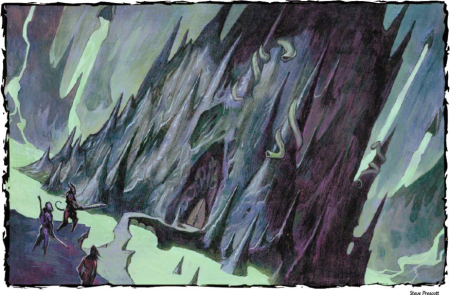

Week 53 - The Tabernacle of Worms.
Oh my Lord, nearly done. It’s been a long year-and-a-half. My players have given me a wonderful christmas present - an “Icons” colossal red dragon. I am displaying it without the detachable fiery breath as I think it looks just a little too much like vomit. Instead, I have a Giants of Legend Standard-bearer (3/72, UC) to give a sense of scale.
See the guy with the banner? That’s you. See the big red thing? That’s the dragon. See the crook-looking brick buildings? Those are the nasty ex-govvie flats where I live, but ignore those for now.
Point is, it’s colossal. It’s going to be a Dracolich. And it is going to kill the party next session. For sure. But, as is becoming usual, I have left off writing up the story for this last session until late.
— † —

A half-mile from the ledge looms an immense pile of stalagmites and upthrust pillars of green rock that form a natural castle. A huge central pillar of stone rises up from the fortress to merge with the roof above. Six smaller stalagmite-like towers rise around the structure’s perimeter. Coiled around each of these spires are immense green worms, their fanged heads twitching lazily to and fro like sentinels, observing the cavern around them. The stone bridge ends at a distant door, which looks suspiciously like a vagina.
Our budding young demigods head out over the bridge connecting the shore to the massive structure in the middle of the lake of slime. The elect to Fly, and to go under cover of an Invisibility Sphere. But they chose to fly directly over the bridge itself.
Well, it does not work out as well as they had hoped. The sentinels - for sentinels they are - see them and set up a racket. After a moment or two, a wyvern and rider emerge from the castle-thingy. The party land on the bridge … or, some of them land and some weren’t flying in the first place. Whatever. After one attack, the dragon is toast thanks to a
Destruction from Frith, and the rider cops it from Flash, via a
Final Rebuke.
1. Tabenacle Entrance
Two massive stone doors set into the side
of the fortress block further progress. Each
door seems to be made of dark stone, yet
each ripples like shivering flesh as countless
green worms burrow through it.
So to the door. Well, the door is a living mass of Kyuss worms. Yow! Frith has his
Repel Vermin spell on, but the worms in the door are held in place by a magical effect, and cannot flee. After a bit of discussion, Flash attempts a
Knock spell. Which, unbelievably, works! The door collapses into a disorganised mass of worms, which creep away from Frith as fast as their repellent peristalsis can take them.
2. Temple of the Worm
This immense hall has a vaulted ceiling that
rises to a height of nearly eighty feet. The
floor is of highly polished stone. To the east,
a flight of stairs leads up to a passageway,
while a single writhing door of worms sits
in the west wall. Numerous alcoves line the
walls, each of which glows with golden light
and contains some sort of free-standing
portal. A bank of stone pillars supports the
vaulted ceiling in the east portion of the
chamber, while to the west, the room is
open. Here, a fifteen-foot-wide fountain of
green liquid churns and sloshes. Standing
on a pedestal in the center of the fountain
is a ten-foot-tall humanoid statue dressed
in tattered robes. The figure’s hands and
part of its face are visible—and appear to
be made of hundreds of worms.
Avolakia. Gross!
But the inhabitants behind the door, thanks to the alarm already raised, are buffed up and ready for a fight. Six or so Avolakia priests of Kyuss (there are more of them, but only these are at home at present).
Battle ensues, spells are cast, Harmony - Gauthakan’s comic relief - demonstrates once again that D&D monks are pretty much useless. There are walls of fire and of blades. Eventually, the party is victorious.
Mend, I think, checks out one of the spires (area 3, labelled “c” in the map). There’s a levitation field inside, and at the top a pair of binocular thingies. Fitting his eyes to them, he engages in a battle of wills with the worm that it is connected to. Victorious, he discovers that he can see through the worms eyes. He descends and informs the party of his discovery, and suggests that they don’t try it again.
4. Grace of the Green
The walls, floors, and ceiling of this twentyfoot-
high hall shimmer and waver with
green light.
They head up the big stairs to the left. One of the party sees through the illusion - I forget how - and reveals this halway for the fiendish deathtrap it is - it is
crawling with Kyuss worms! Frith moves through it carefully with his
Repel Vermin in effect, giving time for the worms to move away from him. Flash
Knocks the doors open, revealing another pair of spire rooms. Finally, he
Knocks the doors at the end. There is some concern, as his spell does not always work, and he must try again. He is running out of magical power for the day.
5. Birthing Chamber
The stony walls of this vaulted chamber
ripple with the burrowing passage of thousands
of hissing green worms. Above, the
ceiling is a dome of green light that illuminates
the chamber with a nauseating viridian
shade. To the west, the wall curves and
features five tall windows that look out into
a large cavern. The floor near these windows
rises up to form a lip or rim around a
five-foot-wide hole in the floor from which
delicate tendrils of green mist rise. A cage
made of writhing green metal hangs from
a stalk of green affixed to the ceiling above,
its empty confines twisting lazily in the air
above the misting hole.
14. Wormdrake Lair
The ceiling of this immense cavern rises
up to a point nearly seventy feet above the
ledge that overlooks it from the southern
entrance. This ledge winds upward along
the northern wall, around a corner to the
east. The cave floor itself drops away in
three shelves, each ten feet lower than the
last. To the east, a stone pillar rises up from
the floor and into the underside of a circular
room that protrudes balcony-like into
the cave from a chamber to the east. Strewn
around the base of the pillar is a fantastic
swath of coins and other objects. The cave
itself is filled with a shimmering green
glow from a huge circular pit to the south.
Well, I forget the exact sequence. Everyone is avoiding the walls, as they are covered with worms. Flash spends another spell slot or two opening the door to the south, behind which is revealed … another door. They decide not to interfere with the cage of strange metal, and instead look out over the ledge to the cavern beyond, using a
Daylight spell to illuminate it.
Which wakes up the wormdrake. It breathes acid and cold at the party, who are protected somewhat by being behind cover. Then it recalls that it is able to Greater Teleport, and teleports into the birthing chamber. Well! That changes things. It breaths a nauseating stream of live Kyuss worms at Frith, who manages to save, dammit. Then before it can do much more damage, the party kill it.
They investigate the chamber below. There is loot - oh yes, indeedy, there is loot. Quite a bit of it. There is also a strange glow coming from the south.
15. Lower Wormvent
A twenty-foot-wide shaft extends up
through the ceiling and down into the
depths of the earth. Dozens, if not hundreds,
of alcoves line the walls of this shaft.
Some of these are empty, but just as many
contain the desiccated remains of a strange
tentacled wormlike creature. The shaft itself
fades into darkness above and below, and
a thick rain of green fluid cascades down
the center of the shaft, filling the air with
an oily haze and coating the walls with
moisture.
The party take stock. Remembering Balakarde’s advice, they conclude that the heart of the temple is above, and there the dracolich, Dragotha. And in another dimension it’s late and time to break for Christmas ’08. Their options are to press on, to rest here, or to teleport out. Pressing on is problematic, as they are beginning to run low on spells. Resting here is out of the question: they will be attacked, and there are worms all over the place. So they decide to teleport out.
But just as they prepare to do so, Flash’s Moment of Prescience kicks in. Don’t do it! Teleporting into or out of here is a bad idea.
— † —
So, … what to do? Press on? Risk the consequences of teleporting home to rest? Give up and go home? Beats me! I’m just the DM. Hope everyone had a nice christmas and pleasant new year. See you all again hopefully this Friday.